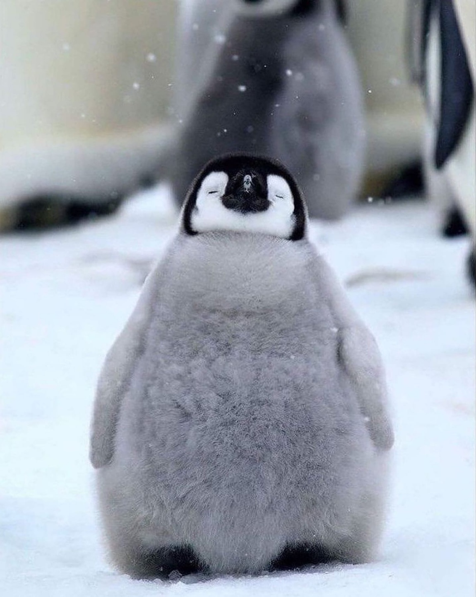

They live almost exclusively in the Southern Hemisphere: only one species, the Galápagos penguin, is found north of the Equator. Highly adapted for life in the water, penguins have countershaded dark and white plumage and flippers for swimming.
Most penguins feed on krill, fish, squid and other forms of sea life which they catch with their bills and swallow it whole while swimming. A penguin has a spiny tongue and powerful jaws to grip slippery prey.